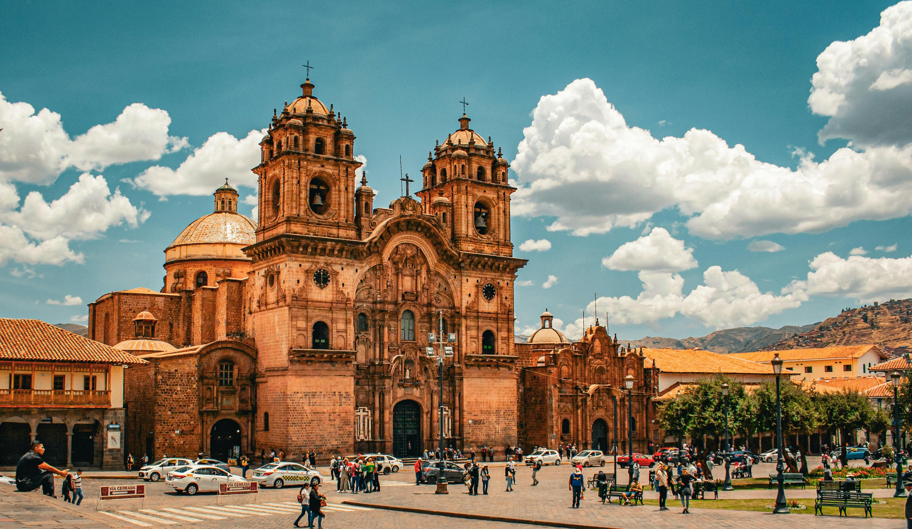

Immergiti nella leggenda di Cuzco, “capitale sacra” Inca incastonato tra le Ande peruviane a oltre 400 m di quota. Fondata, secondo la tradizione, dall’eroe Manco Cápac intorno al XII secolo, la città crebbe fino a trasformarsi in un vero cuore pulsante dell’impero, con templi ricoperti d’oro che riflettevano il sole andino. La sua posizione strategica sulle rotte andine – un intricato sistema di sentieri chiamato Qhapaq Ñan – collegava la costa del Pacifico, l’Amazzonia e l’altipiano boliviano, assicurando scambi di merci, idee e culture.
Gli Inca non erano solo sovrani illuminati, ma anche maestri ingegneri: progettarono sofisticati canali idraulici che convogliavano l’acqua dagli altipiani circostanti, costruirono terrazzamenti fertili che ancora oggi sostengono le comunità locali e innalzarono mura ciclopiche antisismiche dal taglio perfetto. Tra le loro meraviglie, oltre al celeberrimo Machu Picchu, spiccano il Qorikancha – il leggendario Tempio del Sole – e l’immenso sistema di strade imperiali percorribile ancora oggi dagli escursionisti moderni.
Conquista Spagnola e Rinascita

L’arrivo dei conquistadores nel 1533 trasformò Cuzco: sui fondamenta incaiche sorsero imponenti chiese barocche, come la Cattedrale dell’Assunzione, e sontuosi palazzi in stile andaluso. Terremoti, rivolte indigene e carestie segnarono secoli di declino, ma la città conservò un’aura mistica grazie alla fusione di simboli cattolici e tradizioni quechua che si riflettono ancora oggi in feste coloratissime come il Corpus Christi e l’Inti Raymi.
Riscoperta dagli storici, restaurata negli anni ‘70 e proclamata Sito UNESCO nel 1983, Cuzco è ora un vibrante crocevia di culture: un mosaico di strade acciottolate, balconi in legno intagliato e mercati brulicanti di artigianato. Funziona da trampolino verso Machu Picchu, la Valle Sacra e le montagne arcobaleno, rappresentando una tappa imprescindibile per chi desidera comprendere l’anima profonda del Perù.